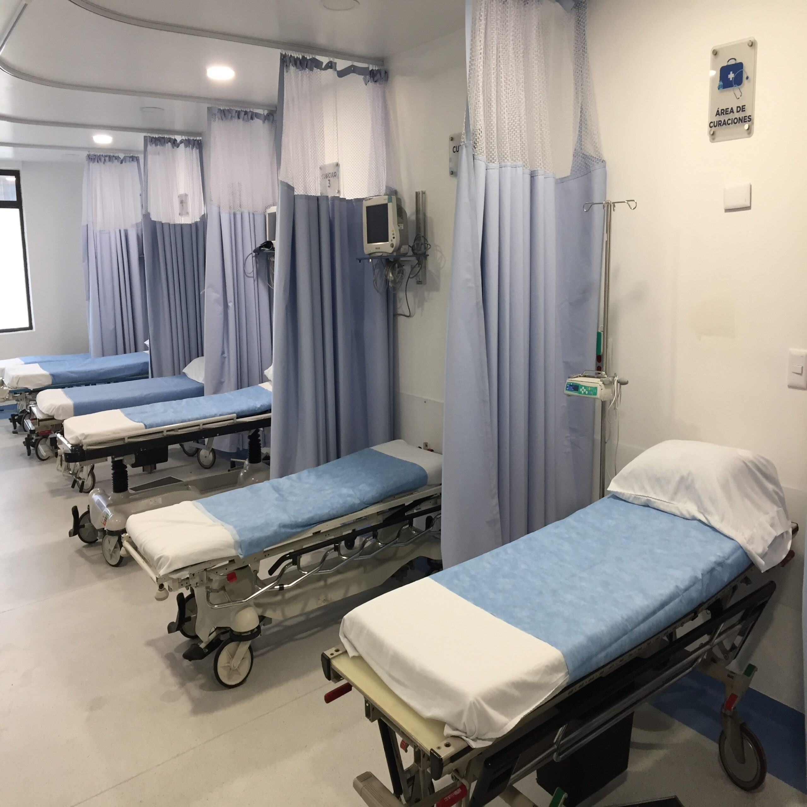
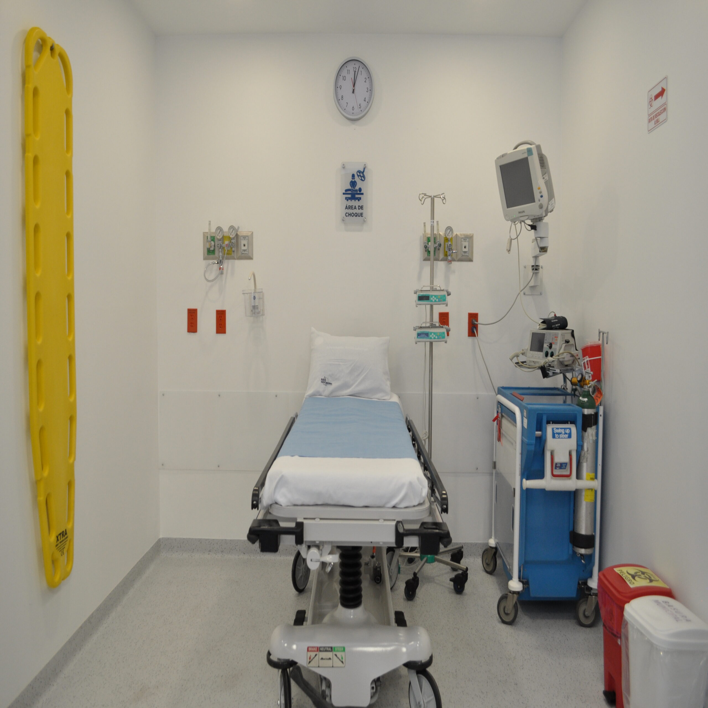
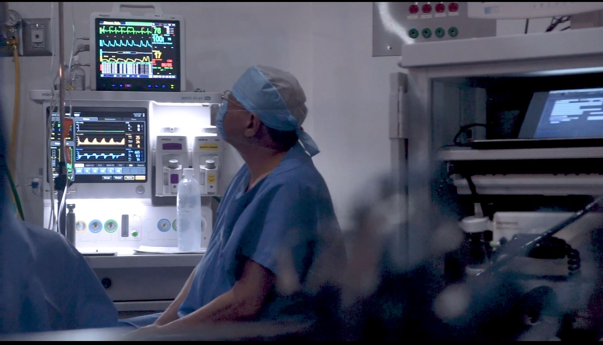
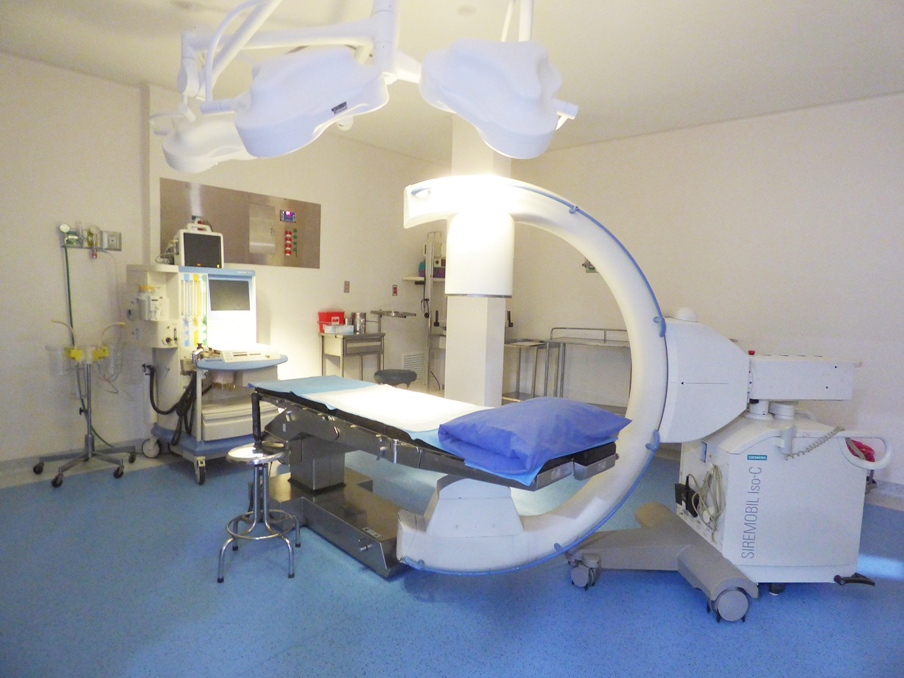
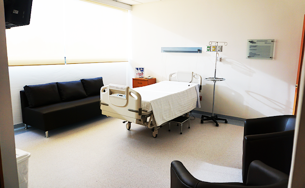
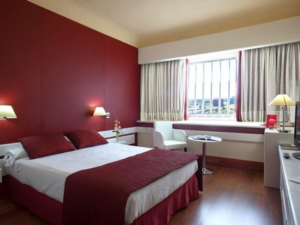

Actualizándonos constantemente, es como llevamos los mejores Servicios Hospitalarios a su alcance.
Contamos con todo el equipo e instalaciones necesarias para la búsqueda constante de la salud. Estándo a sus órdenes los 365 días del año, conozca cada uno de ellos.
| Urgencias
Servicio las 24 horas los 365 días del año:
Personal especializado para atender cualquier situación
Área de Choque
4 cubículos de observación
Área de desinfección
Área de hidratacíon
Área de yesos
Acceso fácil y directo para vehiculos y peatones


| Quirófanos
Todos los quirófanos cuentan con tablero de aislamiento para mayor seguridad del paciente, paredes y piso conductivos y anti bacterianos, así como curvas sanitarias.
Mesa quirúrgica multiposición radiolúcida
Schaerer
Carros de anestesia
Monitores multiparámetros.
Oximetría de pulso y capnógrafos.
Colchón antirretorno para equipo de electrocauterio.


| Hospitalización
Todas las habitaciones cuentan con los máximos estándares de calidad
30 habitaciones
Schaerer
7 Jr Suites
2 Master Suites
Habitaciones que disponen de baño propio
Las camas cuentan con un sistema visual y auditivo de llamado a la central de enfermer@s
Área para pacientes que requieran aislamiento
Servicio de nutrición
Cama para acompañante


| Terapia Intensiva
Asistencia médica y de enfermería altamente especializados
Central de enfermer@s, ubicada en torno a los cubículos para la observación y atención inmediata de los pacientes
Equipos de soporte vital y monitoreo continuo, pantalla táctil, ECG